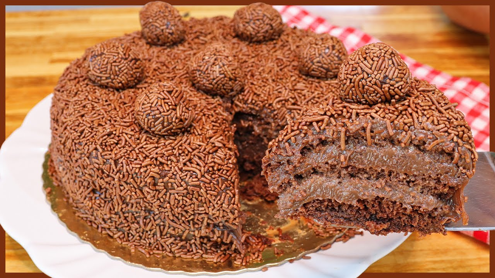

Bolo de Brigadeiro

Massa
- 3 ovos
- 1 xícara de leite
- 1 xícara de açúcar
- 1 colher de sopa de fermento
- 1 xícara de óleo
- 2 xícaras de trigo
- 1 xícara de nescau
Recheio e cobertura
- 3 colheres de manteiga sem sal
- 5 colheres de nescau
- 1 lata de leite condensado
- 1 lata de creme de leite
Calda
- 1 copo de leite
- 2 colheres de chocolate
Modo De Preparo
- Bater os 3 primeiros ingredientes no liquidificador (reserve).
- Peneirar os demais ingredientes secos todos juntos, duas vezes, para ficar bem envolvidos.
- Coloque em uma vasilha os ingredientes já batidos do liquidificador
- sobre o líquido acrescente vagarosamente os ingredientes secos já peneirados
- todos juntos, mexendo suavemente.
- Assar em forma untada e enfarinhada.
Recheio
- Misture tudo, (menos o creme de leite) e leve ao fogo, até o ponto de brigadeiro (o ponto de brigadeiro é quando desgrudar do fundo da panela).
- Quando tirar do fogo junte: 1 lata de creme de leite sem soro e misture bem.
Calda
- Misture bem o leite com o chocolate.
Montagem
- Corte o bolo ao meio, umedecer a massa com a calda e rechear.
- Coloque a outra metade da massa, umedecer a massa com o restante da calda.
- Cobrir e decorar com granulado ou raspas de chocolate